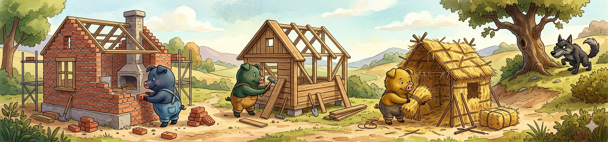
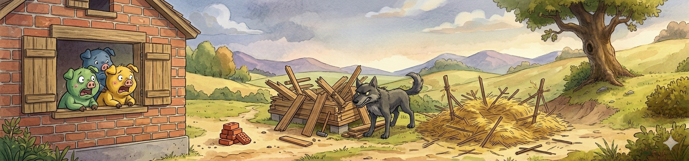
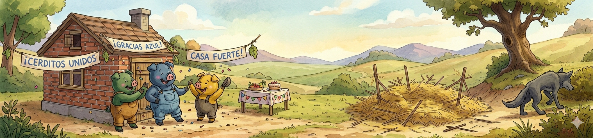

Primer acto
CONSTRUCCIONES
Todo comienza con un lobo travieso que se despierta con hambre. Este lobito hambriento ve a lo lejos tres cerditos y decide desayunar jamón del bueno.
Los cerditos que danzaban felizmente mientras se retozaban en el barro, ven a lo lejos como un lobo despiadado se despierta y babeando los mira fijamente.
El lobo sin perder más tiempo para no deshidratarse con la cantidad de saliva perdida empieza su carrera hasta la ubicación de los cerditos, estos a su vez comienzan a buscar refugio, pero al no encontrarlo, deciden fabricarse uno. El más perezoso de ellos decide no pensar cuál es el mejor material para su refugio, y coge paja del suelo, construyendo su refugio prácticamente al instante por la cantidad de material disponible y la fácil disponibilidad, ya que está por todas partes. El más astuto de los tres piensa que la forma más resistente y rápida de hacer su refugio es usando madera, tiene que buscarla y cortarla, por lo que tarda más que el primero, el cual, como es tan perezoso ya se ha ido a tumbarse en su refugio, terminado desde hace rato, mientras se ríe de los otros dos cerditos por no haber hecho lo que él consideraba la mejor opción. El segundo cerdito que decidió hacer su refugio de madera, por fin termina, y aunque está exhausto, se une a las risas del primer cerdito, para burlarse del segundo, que aún no había terminado de construir su refugio. Este tercer cerdito era el más inteligente y trabajador de los tres, por lo que primero razona en voz alta y dice.
- El lobo es más fuerte que los tres juntos, necesito un material muy, muy resistente, además, necesito hacerlo rápido, pero sobre todo hacerlo bien.
Pensando en la mejor de las opciones llega a la conclusión de hacer su refugio de ladrillo, pero para eso necesita no solo el ladrillo, si no el cemento para unirlos, por lo que se pone pezuñas a la obra y corre a por los materiales que necesita. Tardó tanto que cuando llegó, el primer cerdito, el más perezoso de los tres, se reía de él, aún así, no pierdió el tiempo y se dispuso a preparar la mezcla del cemento y a planificar la estructura del refugio, pero tardó tanto, que el segundo cerdito, el más astuto de los tres, también terminó su refugio, y junto al primero se rieron de él, aún así, nuestro tercer cerdito, es inteligente y muy trabajador, por lo que sigue trabajando sin preocuparle lo que piensen de él y termina justo a tiempo para la llegada del lobo, que dice sin rodeos.
- Hola cerditos bonitos, tengo hambre, y sois muy gorditos, me apena pediros esto, pero... ¿Cuál de vosotros se presta a saciar mi apetito?

Segundo acto
EL ATAQUE DEL LOBO
Tras la llegada del lobo los dos cerditos que se reían del tercero por tardar tanto, corren a esconderse en sus refugios, y una vez cada uno en el suyo, tartamudeando y temblando por el miedo, el primero de los cerditos le dice al lobo.
- No no no no nooos cogerás, lo lo loooobo ma ma malo.
El lobo suelta a reírse y por atreverse a retarlo le dice
- JUA JUA JUA JUA JUA, Cerdito perezoso y miedoso, ¿no sabes que tengo más hambre que un oso? Soy fuerte y poderoso, por eso serás el primero en llenarme la panza de gozo.
Sin titubeos se acerca al refugio de paja del primer cerdito y le dice
- Soplaré y soplaré y tu refugio pichurrio derrumbaré.
Tras su amenaza, el lobo procede a soplar y sin esfuerzo derrumba el refugio del cerdito perezoso. Este al verse tan cerca de su último weee! echa a correr y entra desesperado en el refugio del segundo cerdito, el lobo corre detrás de él y rápidamente se topa con el refugio del segundo cerdito, que con soberbia se ríe del lobo y le dice.
- Lovo merluzo, mi casa es la mejor de todas, la he construido rápido y bien gracias a mi astucia.
Los dos cerditos se empiezan a reír y a burlar del lobo, este al sentirse menospreciado se enfada y les dice enfadado.
-Cerditos cochinitos, os voy a comer a cachitos, como con la casa de tu amiguito ¡soplaré y soplaré y tu casa derrumbaré!
El lobo enfadado cogió todo el aire que pudo y sopló lo más fuerte que pudo, pero no consiguió romper el refugio del segundo cerdito, lo que provocó que los dos cerditos se partieran de la risa al ver como el lobo se ponía rojo de tanto soplar, el lobo llegó al límite de su paciencia y se le cruzaron los cables, apretó bien los puños y empezó a golpear con fuerza la casa, los cimientos se agitaron, los tornillos se aflojaron y el refugio del segundo cerdito que decía ser el mejor porque era el más astuto se derrumbó. El pánico invadió los jamoncitos de los dos cerditos y corrieron rápidamente a su última opción, la casa del tercer cerdito.

Tercer acto
TERCER CERDITO VS LOBO MALO
A estas alturas, el lobo ya estaba desesperado por el hambre y no quería ni hablar con los tres cerditos, sin embargo, el tercer cerdito que era el más listo y el más trabajador de los tres, le propuso un trato.
-Lobito chungo, te confieso que me das miedo, pero aun así estoy dispuesto a trabajar para ti, te limpiaré la cueva, te peinaré el pelaje y limpiaré tus dientes, si prometes no comernos, además te buscaré comida, para que no tengas que moverte de tu cueva nunca más.
El lobo se pensó la oferta, pero su mente estaba tan nublada por el hambre que no se lo pensó mucho y no tardó en rechazar la oferta del tercer cerdito, además les advirtió.
- Tras mis esfuerzos por saciar mi hambre, no pienso parar lo que con tanto esfuerzo, te aseguro que voy a lograr, os comeré a los tres, para saciar este hambre que me desespera, así que, se acabó la espera. Soplaré y soplaré y tu refugio romperé, si no lo consigo, golpearé y golpearé hasta que tu refugio romperé y por fin os comeré.
El lobo sopló y sopló pero nada consiguió, se dispuso a golpear el refugio con todas sus fuerzas, y los puños con fuerza apretó, pero tampoco, nada consiguió, harto de esperar cogió una grúa y la casa derrumbó y a los cerditos se comió.
FIN.
Naaaaaaaaaaaa...... Mentira... La historia no termina así, no te asustes.
Realmente el lobo no es capaz de derrumbar la casa del tercer cerdito, porque este se había esforzado tanto en su construcción, en la elección de los materiales y en la recogida de estos, que había creado una fortaleza impenetrable, por lo que al lobo no le quedó otra opción que rendirse y buscar comida por otro lado, lejos de la amarga derrota del victorioso y orgulloso tercer cerdito.
Esta breve historia muestra que la voluntad, la perseverancia, el esfuerzo y el estar centrado a pesar de las opiniones en contra, pueden más que el más fuerte y feroz de los problemas. Me gusta esta historia porque demuestra que lo bueno cuesta, que la pereza no te ayudará en nada y que la astucia no es nada si no hay esfuerzo a la par. Este es el verdadero final de la historia.
